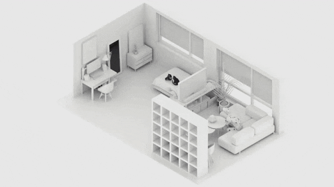

They contain wall layout drawings, electrical layout drawings, doors and windows layout drawings, plumbing layout drawings, and furniture layout drawings. Increasingly, building information modeling (BIM) is also used to create three-dimensional representations and improve the coordination between architects, engineers, and interior designers. Working drawings are used in all kinds of projects – residential, commercial, hospitality, or industrial. They can be provided in 2D or 3D, depending on the client’s requirement. Either the interior designer has its own drafting team or may rely on a design drafting company to provide the drawings. Real estate interior design drawings have become the most important way to plan a project. As working drawings include dimensions, tolerances, notations, symbols, and specific information related to the project, they have become the mainstay for any project – new build or renovations.
